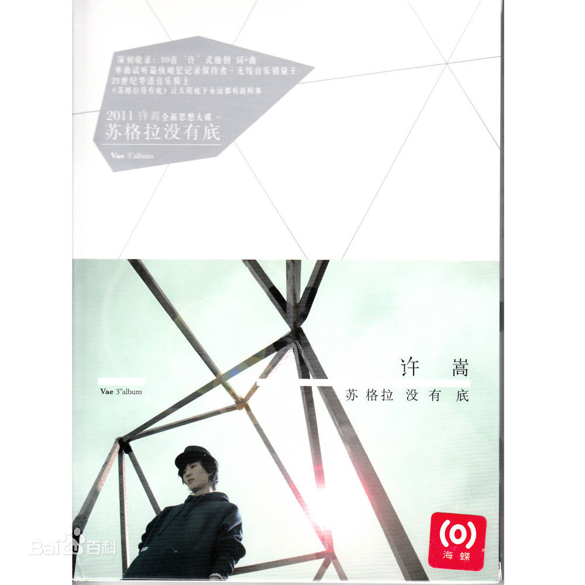

许嵩最大的悲哀就是在歌迷还是初中高中生年纪的时候出了一张成熟的大学生才能听懂的专辑，然后那些因为听不懂而脱粉的粉丝很多年以后却想不起这张专辑，只记住了许嵩是自己非主流时候喜欢过的歌手。

这几天的查阅，我才算是真正的见识了许嵩的文采。
专辑–苏格拉没有底
转载自网易云音乐：http://music.163.com/#/album?id=16937
在文中加入自己的看法，仅代表个人看法，如有不妥，敬请指出。
从昔日那个写着哼着《城府》夺得各大音乐试听榜冠军的音乐顽童成长到今时，许嵩在音乐层面一直保持独立做派，此番再度包揽十首词曲的全部创作。毫无粉饰的生存哲学，超越现实的想象思辨，细而不腻的私人回忆，在十首作品里尽数展现。自成一派的制作风格与词曲质感，随性慵懒的演绎方式，标志性的假音与转音，舒服惬意的中慢板R&B节奏……令人一听便可品出强烈的个人风味。浪漫与幽默并存、务实与务虚交织，《苏格拉没有底》仿若暗器般无色无味却能迅速在人心中稳固沉积，在悠然自得的节奏摆荡中持续扩散。
《想象之中》
这首慢板R&B作品，内敛中带些慵懒的唱腔——无论是走在街头，坐在车里，临睡前，对着电脑时……听起来都很惬意。作为这张专辑的总制作人，许嵩就是有这样一种能力，让人轻易就跟着他的安排陷入思考或回忆。当然，这与他虽年纪轻轻就已全权制作过两张专辑及十余首热门单曲的经验有莫大关系。《想象之中》由一个诡异中带点滑稽感的电子音色开场，这种阴郁懒散的情感基调，已成为他的个人特质。大气却不乏细腻之处的旋律，值得玩味的歌词，保障了该作品的一线水准。单论演唱而言，许嵩亦有一种独特的声线气质：慵懒中仍保持着清新的气息。大量滑音、装饰音穿插在整首作品中，但却也不会给人以油滑之感。至于情绪的分寸拿捏也相当到位：3分37秒，沙哑的一瞬，情绪的涌动把伤感推到新的高度。
《河山大好》
像是一种童趣的重返，他从来都不是一个只会苦着脸唱悲歌的忧郁人，他的喜与悲都在歌里了。他的作品情绪向来是立体、多面的。纵观整张专辑，十首风格迥异的词曲均出自一人之手，这份真实与挥洒，让作者的形象变得愈发清晰可爱。《河山大好》似乎有劝年轻人莫要宅的含义，但却没有半点说教之感，而是如同一个老友，邀你一起出门走走。“保持浪漫心态，活着就不算坏”与其说是一种情绪，不如说是一种情怀；“地球离了谁它都照样公转自转”，谁都别把自己太当回事，这种论调就更洒脱。不落俗套的旋律，清新的念唱，R&B的节奏骨架，构建起了整首歌的律动，让人情不自禁跟着节奏摆荡，有“出去走走”的冲动。
《拆东墙》
词面上，许嵩借叙述一个唐代小酒馆老板的悲情人生，影射当下种种社会现实，颇有后现代意味。没有愤怒、没有发泄，而是以淡淡的悲悯之情，让诸多尖锐话题拥有了新的探讨方式与出口，称得上是惊艳之作。从大局而言，起承转合收放自如；细节上，黑色幽默与巧思不断，许嵩的笔风独树一帜。如果说这种“借古喻今”还称不上是创举，那么全曲的最后一句则把这首作品引入哲学思考的范畴。至于音乐部分，念唱流畅如水；R&B吉他丝丝入扣；副歌的旋律与歌词咬合度超高。词、曲、唱、制作出自一人，且如这般天然合一，当下恐怕没有几人做得到了。
《拆东墙》描绘了唐代一个“小人物”的悲惨命运。“小人物”科举未中，子承父业，相貌平平，辛勤隐忍。 但“小人物”也有理想，“小人物”也有爱，“小人物”也有信念，“小人物”却命运艰难，最终黯然离开。马蹄阵阵连绵，朝代更迭不休，无论何时，这种“小人物”都存在在每个角落，他们那么不起眼，他们在实现哪怕一点点小理想的路上都走的那么艰辛，因为他们是小人物，小人物的“命运”就是这么多舛。可拆了东墙的，西墙也未必补的上。
词面上，许嵩借叙述一个唐代小酒馆老板的悲情人生，影射当下种种社会现实，颇有后现代意味。没有愤怒、没有发泄，而是以淡淡的悲悯之情，让诸多尖锐话题拥有了新的探讨方式与出口，称得上是惊艳之作。从大局而言，起承转合收放自如；细节上，黑色幽默与巧思不断，许嵩的笔风独树一帜。如果说这种“借古喻今”还称不上是创举，那么全曲的最后一句则把这首作品引入哲学思考的范畴。至于音乐部分，念唱流畅如水；R&B吉他丝丝入扣；副歌的旋律与歌词咬合度超高。词、曲、唱、制作出自一人，且如这般天然合一，当下恐怕没有几人做得到了。
这首歌绝不会这样浅显。我猜是关于强拆的吧。现在强拆问题挺严重的。不同意拆就断水断电。所以现在有了一个新名词——钉子户。大概是从古代开始的吧。
第二点我想说的是现在女孩子找男朋友都先看条件怎么样。结婚后也只是贪贪小财。可男方确实很痴情。连菜都自己去买。这是一个傻乎乎却额憨厚的而后来又写出了无奈的感觉。真的是，很多事是不由人的。从东墙一直拆到最后拆干净了。而最后碍于面子，西墙也要拆……。我自认为咱家嵩的最后一句写得最好。
《医生》
“我也没那种，庸俗的情结”。不知许嵩暗指的是哪种情结，但也正基于这种朦胧，这首作品的疗伤范围似乎变得更大了。成熟厚重的音乐，初时让人不解：为什么许嵩在这首歌的表达上要如此传统保守？读着歌词渐渐明白了：爱情世界里的一个老实人，他的保守的内在，他为对方疗伤的决心，他此地无银三百两的说自己没那种庸俗的情结……让人的心有被揪了一下的痛感。以如此的曲风呈现如此的歌词内容，也是一种恰如其分吧。
《微博控》
科技的浪潮也注定了越来越多的人会成为那种“不玩微博就觉得少了点什么”的微博控。而许嵩对生活的观察依然敏锐，对热门事物的理解依然独到。《微博控》透过描写一对相互都玩微博的恋人，传达了感情在网络交织的叶片上有趣的脉络。而副歌更是隐含了对“做的多不如说得多”的社会现状的思考。把创作深度藏匿于简单的歌词背后，是许嵩从作品《素颜》里就呈现了的另一路特质。至于韩范儿的R&B曲风，弹性十足的俏皮演绎，都是这首歌的加分项。
《毁人不倦》
“几片来自松岛的枫叶”……作为整张专辑中最冷艳的一首作品，作词、作曲、编曲、混音连同录音均由许嵩一人包办。阴郁空灵的编曲，让人印象颇深。在隐晦的歌词中，自嘲、批判、痛苦重叠交织，他骨子里的反叛由此窥见。
- 1:10 为革命为革命为革命保护视力
- 1:30 Baby 三陪 可怜她没有人陪 嘿嘿
- 2:23 忘不了的痛，心的更痛，陌生人，你的做错，让她很痛，初夏的雨夜 习惯不辞而别
《双人旁》
简简单单的抒情作品，回归原始的感动。人生在世，每个人的身旁都有或有过那么一个爱的人，那种温暖，是每个人都乐于回味享受的。90’s R&B风格，简约而怀旧；作者使出了很萌的唱法，让这首歌的气质跳脱于整张专辑的冷色调。难得的温馨流露。
《降温》
这首作品没有“歌词”，而是一则唱出来的“日记”。真实感极强的词句，记录2010年11月20日的生活细节；从多处貌似无心插柳的“设局”，不难揣测此篇日记的良苦用心。念唱式的旋律层层递进，带点儿混搭感的三弦与京味儿独白——作为一首实验之作，它不是徒有其表。而结尾一句突然跳转画面，实谓神来之笔。
《敬酒不吃》
当作为生存本能的吃与喝被利益目的附身——不是所有人都愿意接受这套规则。许嵩把社会生活中的极微小画面做艺术放大，相当犀利。带点爵士味的R&B，清冷凛冽；独特的真假声转换，宣称着“我就这副死样”……通过这首作品，看不到许嵩的努力，只看到许嵩的天资。因为，这样的作品绝不是靠“用心写”就能写出的——如果骨子里没有那种把音乐当成玩儿的洒脱劲的话。
《千百度》
当中国风的歌被写滥，人们都在奇怪为什么除了台湾的周杰伦，能把中国风写红唱红的就只剩许嵩了？中国风可不是用几个民乐器夹杂几个半文不白的句子就能红。周杰伦有方文山，而许嵩只有许嵩，如《清明雨上》、《半城烟沙》、《庐州月》等等口碑之作，全部出自许嵩笔下。典故的化用，创造新词汇的想象力，借古喻今的手法，传统戏曲技巧的融入——他自有他自己的一套。在《千百度》里，温婉内敛与开阔大格局兼容并蓄，这是许嵩独有的音乐气质，换个人唱就没有这个味了。其实纵观专辑里的每一首作品，都具备这种“非他莫属”的专属质感。